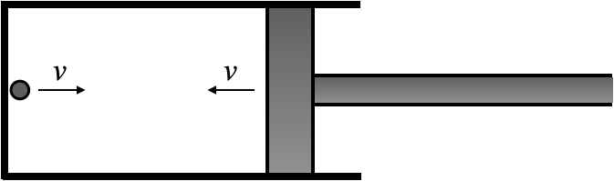

문제 1
단계 1
직선상에서 운동하는 질량이 다른 두 물체의 충돌을 실험하였더니 충돌 전후의 운동량과 운동에너지가 같음을 관측하였다. 두 물체의 충돌 전후 상대 속도는 어떤 관계가 있는가?
단계 2
그림과 같은 피스톤 용기의 왼쪽 벽으로부터 질량 \(m\)을 가진 아주 작은 입자가 속력 \(v\)로 피스톤을 향하여 벽과 피스톤 면에 수직인 직선상으로 움직이기 시작했다. 이와 동시에 피스톤 역시 속력 \(v\)로 용기의 길이를 점점 줄이기 시작했다. 피스톤이 입자와 충돌할 때 피스톤이 입자에 전달하는 충격량을 설명해보시오. (단, 충돌전후의 상대속도 관계는 "단계 1"의 답을 따르고, 용기는 바닥에 고정되어 있고, 피스톤의 질량은 \(m\)보다 매우 크다고 가정하시오.)

단계 3
얼음위의 가만히 정지해 있는 두 사람이 공을 서로 던지고 받는 놀이를 하려고 한다. 처음 공을 던진 사람이 다시 공을 되받는 과정을 물리법칙을 사용해서 설명해 보고, 되받는 것이 가능한 경우와 불가능한 경우의 예를 들어보시오. 두 사람의 질량은 \(M\)으로 같고 공의 질량은 \(m\)이다. (얼음과 사람 사이의 마찰은 무시할 만큼 작고, 중력의 영향은 무시하여 공은 직선상 운동을 한다고 가정한다. 공을 던지는 사람은 공이 항상 던지는 사람 자신에 대해 상대속도 \(v\)로 상대방을 향해 진행하도록 던진다.)